WebMapReduce Activities¶
This document contains a series of activities for you to try with WebMapReduce. Each one involves separate sets of data of increasing size.
Poker Hands¶
The first data set we will explore is about Poker Hands. The Poker Hand Dataset contains a listing of 1,000,000 randomly generated, 5 card poker hands. Each line of the document contains a comma-separated list of the information of each hand. If you read it in order, each line describes first the suit, then the value of each card. The final value on the line is the ranking of the hand. So, each line reads, in abbreviated phrasing
`S1,C1,S2,C2,S3,C3,S4,C4,S5,C4,R`
The suits are translated as:
1 Hearts
2 Spades
3 Diamonds
4 Clubs
The rankings move in standard poker hand rank ordering:
0 High Card
1 Pair
2 Two-Pair
3 Three of a kind
4 Straight (five cards of sequential rank with no gaps)
5 Flush (five cards of the same suit)
6 Full house (pair + three of a kind)
7 Four of a kind
8 Straight flush (straight of cards all in the same suit)
9 Royal flush (Ace, King, Queen, Jack, Ten, all of the same suit)
So, a royal flush in hearts would look like:
`1,1,1,13,1,12,1,11,1,10,9`
The first thing we’ll do with this is count how many of the 1,000,000 hands are of each ranking. This will involve creating a mapper that splits the inputted string into a list, and then emits the ranking. Then the reducer will count how many times each ranking is emitted. Remember, since this is a comma-separated list and not a tab-separated list, each mapper will get the entire line sent to it as the key, and the value sent to the mapper will be blank. The data has already been uploaded and can be accessed from /shared/pokerHandData. Let’s start with the mapper, which should look like this:
def mapper(key, value):
hand = key.split(',')
rank = hand[10]
Wmr.emit(rank, 1)
We emit a value of  to make counting easier in the
reducer.
to make counting easier in the
reducer.
Next, we need our reducer. Remember that since we emitted the rank as the key in the the mapper, each reducer will get a key equal to a rank (0-9), and then an iterator of all of the values emitted by the mappers. Since all of the values emitted by the mappers were 1’s, we can simply add up the 1’s to get our total count:
def reducer(key, values):
count = 0
for value in values:
count +=int(value)
Wmr.emit(key, count)
Activities¶
- Edit the code provided above so that instead of outputting a count, you output the percent of hands in the data set of each ranking.
- Count the number of flushes of each suit. For a challenge, after you’ve counted them, convert the suits from their labels to their actual names (change 1 to Hearts, 2 to Spades, and so on).
Car Information¶
Next, we’ll look at information on cars in another set of comma-separated lists. Each car has six attributes: buying price, maintenance price, number of doors, number of people who fit inside, trunk size, safety, and acceptability of the car. The possible values for each are:
Buying Price v-high, high, med, low
Maintenance Price v-high, high, med, low
Number of Doors 2, 3, 4, 5-more
Number of People 2, 4, more
Trunk Size small, med, big
Safety low, med, high
Acceptability unacc, acc, good, v-good
The data is uploaded at /shared/carData
Activities¶
First, using the mapper/reducer you used for the poker hand data, count the number of cars in the set of each acceptability.
Adapt your code so that you find a percent of the 1728 cars in the set with a given acceptability.
For a challenge, see if you can get more specific, and find cars of a certain acceptability in addition to given attributes. For example, count cars by their price to buy and acceptability. Your output should look something like:
unacc-low Some value unacc-med Some value unacc-high Some value acc-low Some value acc-med Some value and so on
Movie Data¶
Next, we’re going to look at movie rating data. The information on movie ratings was gathered by a University of Minnesota research group called Movie Lens. The data set contains information on 10,000,054 different ratings, including 10,681 different movies and 71,567 different users (uploaded to /shared/MovieLens). Unlike the previous two datasets, this dataset is arranged into tab-separated lists. Each line contains:
MovieId UserId Rating Timestamp
Before we start playing with the data, let’s recall the differences between using a tab-separated list and a comma-separated list. The most obvious difference is using a different split. Instead of splitting on 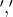, we now need to split on 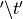. The less obvious difference is how WMR treats the lists. When using a tab-separated list, rather than giving the whole line as the key to the mapper, it gives the first value in the list as the key, and the rest as a single string for the value. In the case of the movie ratings, this means that the key of each mapper will be the MovieId. If it makes it easier for you, you can change the def line of your mapper to read 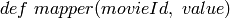.
To make this more clear, let’s look at a simple example. Let’s count the total number of ratings each movie got. Examine the code below:
def mapper(movieId, value):
Wmr.emit(movieId, 1)
def reducer(movieId, values):
count = 0
for value in values:
count+= int(value)
Wmr.emit(movieId, count)
Activities¶
- Find the average rating for each movie.
- Find the average rating that each user gives to movies.
- Find the number of movies given each of the five ratings.
Flight Data¶
Provided by the Bureau of Transportation Statistics, the Flight Data dataset (the data is uploaded to /shared/FlightData) contains information on delayed and cancelled flights. Each line of the data is arranged in a comma-separated list detailing: Flight Date, Airline, Origin Airport, Origin State, Destination Airport, Destination State, Departure Delay, Arrival Delay, Cancellation Code, Carrier Delay, Weather Delay, Security Delay, Late Aircraft Delay, Totally Additional Gate Time.
A couple notes about the data. First, notice that a negative delay means an early departure or arrival. Also, it is important to note that all of the text entries in the data include quotes. Numbers are represented in floating point without quotes. If you want to include quotes in a string, you need to use a backlash. You can also use the strip() method on any string to remove leading and trailing characters. So if you 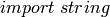, you can do 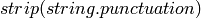 to remove all punctuation, including quotation marks, from the string. Next, be careful with cancelled flights. Cancelled flights are represented differently in the data than flights that were simply delayed, in that the delay is left blank, but a code is put in the Cancellation Code column. This means that somewhere in your mapper or reducer you have to have a condition to deal with these, or else your values will not come out well.
The data is organized into 4 folders. Each folder represents a year’s worth of information. Thus, within /shared/FlightData, are directories for data from 2011, 2010, 2009, 2008. Each file in those folders contains a month’s worth of information. Each one of these has files for each month of that year. So to get the January 2011 data, your Cluster Path would be:
/shared/FlightData/2011/201101.csv.
Note
that if you type /shared/FlightData/2011 into the Cluster Data Path, you will use all of the files for the year 2011 (the 2001 data is an incomplete set, in that it contains data from January through April). Thus, you can do a year’s worth of data at a time.
Note
A nice trick when using WebMapReduce is that you can choose the test option on one month’s worth of data and enter the identity mapper and reducer to simply get a sense for what is in the first few lines of the file itself. (Ask your instructor if you do not have example Python files for an identity mapper and an identity reducer.)
Do this now: use an identity mapper and identity reducer on this file:
/shared/FlightData/2011/201101.csv
Note how the date is formatted: the date string is “year-month-day” as “yyyy-mm-dd”. So a flight on January 1, 2011 has a date string “2011-01-01”.
A potential issue: Now that we’ve mentioned the nice trick about using test mode, it is sometimes tha case that test mode seems to stop working in WMR. When this happens, you are left to simply submit your work instead.
There is a ‘header’ line in each file that indicates what is in each ‘column’ of data separated by the commas. It looks like this (all on one line in the file):
"FL_DATE","CARRIER","ORIGIN","ORIGIN_STATE_ABR","DEST","DEST_STATE_ABR","DEP_DELAY","
ARR_DELAY","CANCELLATION_CODE","CARRIER_DELAY","WEATHER_DELAY","NAS_DELAY",
"SECURITY_DELAY","LATE_AIRCRAFT_DELAY","TOTAL_ADD_GTIME",
To see just this line, you could use a mapper like this:
def mapper(key, value):
items = key.split(',')
if items[0] =='"FL_DATE"':
Wmr.emit(key, value)
Then use an ‘identity reducer’ with the above.
Now you have seen what is in this file. Before you can use this data for analysis, you must first add a condition into your mapper that deals with the first line of the file. If you examine the files, you will see that the first line of each file is a header file that details what information is on each line of the file. This makes the file a lot easier to read, and is especially useful if you are using the python csv module (which we will not use in WebMapReduce). In our case however, you need to put a condition in your mapper to ignore this line. Think about this: if you split the key, what will the first element in the list be? Will it ever be the same thing in any of the other lines as it is in the first line?
Activities¶
- First, pick a year and find the average arrival delay for each airport in that year. Use the origin airport.
- in homework: Find the average arrival delay per day.
- Challenge: Find the average arrival delay per month. Hint: While similar to finding the average delay per day, this involves an extra step.
- Challenge: find the average delay per airline per month. To do this, you will have to run jobs for one airport at a time. Pick specific airlines to try. Start with the major ones like Delta (DL), United (UA), American (AA), or Southwest (WN). A note about using this data with Google Fusion Tables: to get Fusion Tables to recognize a month as a month, you need to have it in the form 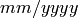. This means you have to split the date string as it is given, and then create a new string using a slash (/) instead of a dash (-).
Google N-Grams¶
A N-Gram is a phrase of  words. For example, “hello” is
a 1-Gram, and “hello world” is a 2-Gram, or bi-gram. Using books
from Google Books, Google put together a list of N-Grams. Last
generated in July 2009, the corpora contains 10 Gigabytes(GB) of
1-Grams, 100 GB of 2-Grams, and 200 GB of 3-Grams. 4-Grams and
5-Grams are also available. The n-Grams data is uploaded to /shared/NGrams
words. For example, “hello” is
a 1-Gram, and “hello world” is a 2-Gram, or bi-gram. Using books
from Google Books, Google put together a list of N-Grams. Last
generated in July 2009, the corpora contains 10 Gigabytes(GB) of
1-Grams, 100 GB of 2-Grams, and 200 GB of 3-Grams. 4-Grams and
5-Grams are also available. The n-Grams data is uploaded to /shared/NGrams
The N-Grams are arranged into files which contain tab-separated lists. Each line shows the information for an N-Gram for a given year. It gives the following information:
N-Gram Year Total occurrences Pages Volumes
The 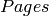 entry is the total number of pages an N-Gram occurs on. So if the word and appears 5 times on a page in a book, it counts 5 times for the , but only once for the . is the same thing as , except that it counts the number of unique volumes or books that each N-Gram occurs in.
1-Grams¶
Let’s start by working with a useful 1-Grams activity. An interesting problem you can investigate with N-Grams is how language has developed over time. As language evolves, new words enter peoples’ vocabulary, while others fall into obscurity. I’m sure you can think of many examples, like how thou has fallen into obscurity, while the word computer is a relatively modern word.
We will look at a useful method for determining high-frequency interesting words. Our goal is to eliminate highly occurring words of low interest, such as articles (the, a) and prepositions (e.g. to, from, of for) and focus on ‘interesting’ words that occur often.
Information retrieval experts are interested in a related problem: given a set of documents and a user’s query word, find all those related to that particular word. This is done by locating the documents where that word occurs the most often in relation to the size of the document and number of total documents.
We can use this technique in a slightly different way to determine the frequency of popular words, yet eliminate those that are simply commonly occurring words in English. We will do this with a ratio called a tf-idf (term frequency-inverse document frequency). The formula for tf-idf is:
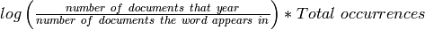
Notice how the fraction approaches one for uninteresting words that occur in every document. Since the log of one is zero, this value will be quite low. Those words that occur more frequently, but not in every document, will have higher values. We will be examining how to use this to determine some of the top frequently occurring words per year in the 1-grams dataset.
There are some Python files to help you get started in a directory of files on moodle.
The file called 1gramMap.py in this directory contains a dictionary called yearDict that has defined the total number of unique 1-Grams for each year. We did some separate analysis of the 1-grams to devise this dictionary for you. What is this mapper emitting? Note that we are eliminating years where there is not very much data (low number of volumes), because the tf-idf calculation is less useful for these.
Now let us examine the reducer, in a file called 1gramReduce.py. Look it over and explain what it is doing. Write explanations as comments in each of these files.
There are likely a few new things in this code that you have not seen before. OIne of them is the use of the sorted method to sort the items in a dictionary. Try to look up how this works. We need to sort the words out into a list of pairs (word, frequency), ordered by frequency, in order to emit only the top 20 frequently occurring words. If you still find this confusing, try creating a simple example and using it in a script. Create a dictionary that is not sorted, sort it, and then loop through it getting the sorted values.
Activity¶
Run this code through the 1-gram data, found on /shared/NGrams/1-Grams. Do you find anything interesting in any particular year?
Activity¶
Now you will do something different. Your goal: pick some words and see how their frequencies have changed over time. You can do this one word at a time. Your final output will be the pairs of (year, frequency of that word in that year).
In your mapper, you will want to ignore all words in the files, except for the word you are looking for. By doing this, we are using the many mappers that will each work on one line of this data as ‘filters’ to eliminate all words but the one we are interested in. In this case the year will be the key. You decide
Each reducer will work on a year. In your reducer, you can use a dictionary of the total number of words per year in the collection. We have created this for you in the file findWordReduce.py. Figure out how this will help you generate the frequency of the word in that year.
Do These¶
- Choose some words that were given as examples in the ‘Culturomics’ paper.
- Try graphing your results for a visual representation (see Google Fusion tables below).
- You could compare words to see how related they are (e.g Microsoft, Apple or computer, technology).
Google Fusion Tables¶
In this section, we will explore using the Google Labs project Google Fusion Tables. Google Fusion Tables allows you to import tables of data, merge them together, and then create visualizations. If you follow the below steps, you should be able to get started very easily.
First, you need a Google account. It appears that this will not work with your Macalester Google Apps account. You will need to use it with another gmail address ending in @gmail.com. If you don’t have one, you could create a Google account. They are free and easy to set up.
Go to the bar at the top of any google page which lists the different Google Services. The last item should read more. Click on it, then click on even more at the bottom of the dropdown menu.
Scroll to the bottom of the page. Under the last heading, 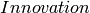, you should see a link to Google Fusion Tables. Click on it.
From the main page, you can see a list of all the tables you have created/imported (using a gmail address).
If you see a list of all of your files from your Macalester Google Apps account, this means you are logged into that, and will need to log out. Or you can use a different browser and log into your gmail account with that.
Whe logged into your Gmail account: You can view your Google Docs available with that account by choosing ‘View My Tables’. Here is Google’s help page for importing your files for use with Fusion Tables:
Google Fusion Table Help to Import Files
You will be importing your files into Google Docs as ‘Tables’. Be sure to choose that your file is tab-separated if it came from WMR.
(See example files below if you don’t have one of your own too try.)
To create a graph of your data table now in Google Docs, simply select 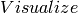 from the top menu of your table. Then, select the type of visualization you would like to use.
Play around with the different features of the visualizations to get a feel of how to create graphs.
Merging Tables¶
There are two files that you can try using for this available on moodle:
- ComputerOccurences.csv
- technologyOccurences.csv
Though the names imply that they are comma-separated, the data in each column is actually tab-separated.
Some of the activities you will do will require you to merge output from a couple of WMR job outputs like these together and visualize them together. Doing this is quite simple:
- Open one of the files you would like to merge from the Google Fusion Talbes main page.
- Select from the top menu of the table.
- Click in the input box next to the big number 2. This should open a drop-down list of your other tables. Select the one you would like to merge to your table.
- In the two side-by-side boxes below this, click on the radio-button (it looks like a grey dot) next to the value that is shared between both tables. This should be something like year, or month, or whatever the common variable is between the two tables.
- Below both boxes, check the option. Then, make sure that all of the square boxes are checked next to your variables.
- Enter a name for the new table you are making in the text box where it asks you to.
- Click 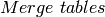
- You can then visualize the new table just like any other table. To select to show all values, either hold the CTRL or SHIFT button on your keyboard as you select the columns in the list.